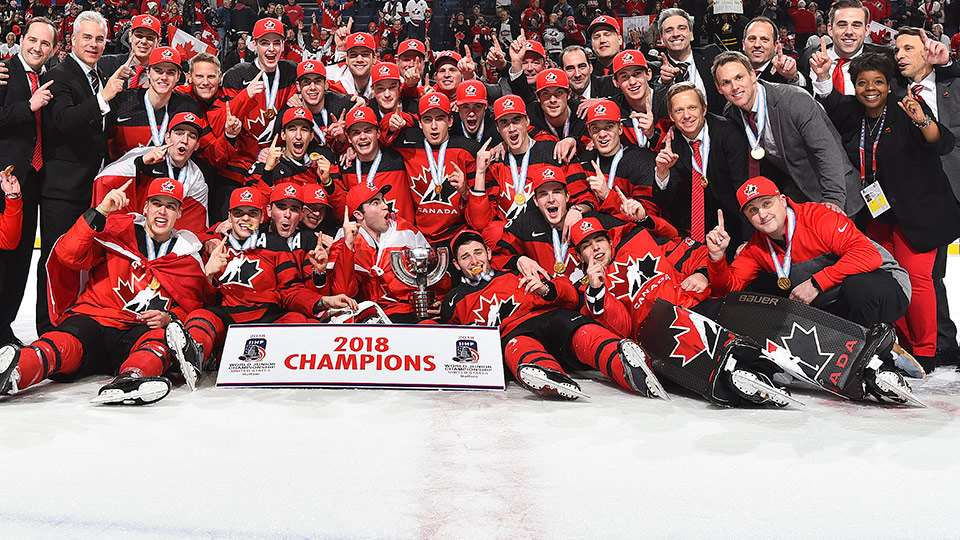

Hockey is a team sport, and is played as either a skater or a goalie. A goalie plays in front of a net within the crease, their job is to stop the puck from entering the net. They were different equipment than that of the players as it is to protect them when they attempt to stop a puck. As pucks can get up to fairly highspeeds, some of these speeds can be seen if you watch the videos at this link.
Even if wear you play doesnt recommend a full face guard on your helmet, it is advised as you could be hit in the face by the puck or another player and it could break teeth or bones and the full faceguard helps to prevent that.
The objective of the game of hockey is to put the puck in the opposing teams net. This is done by team working and using your stick to guide the puck to the net by doing this your team scores 1 point. The game does not end by a certain amount of points it ends after 3 periods that are 20 minutes in length, or if the game goes to overtime or a shootout. The game will go to overtime or a shootout if the score is tied at the end of the 3 periods. There are many rules to hockey such as high-sticking which is when you raise the bottom of your stick above your shoulders or over the height of the nets cross bar. Each penalty has a sign that the refs, use to communicate what penalty is being called, continuing with the high-sticking example this can be seen by the ref putting his hands up like he is holding onto a stick in the air and doing a flick.